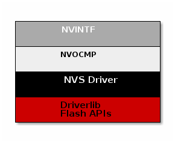

Flash¶
The flash is split into erasable pages of 8 kB. The various sections of flash and their associate linker files are as follows.
Flash Reset Vector Table: This table holds the first 16 reset vectors that are critical for booting up the device. These vectors are set at build time and cannot be dynamically changed. See sec-flash-vector-table for more information.
Non-volatile (NV) Area: used for nonvolatile memory storage by the Zigbee network information and also available for use by the application. See Non-Volatile Memory Items for configuring NV.
Application and Stack Image Code Space: A single region that contains both application and stack code in flash. This image is configured in the linker configuration file of the application: <device name>_app_and_stack.icf (IAR) and <device name>_app.cmd (CCS).
Non-Volatile Storage Architecture¶
This section will describe the non volatile storage system that is implemented and used on the CC13xx or CC26xx. This system provides access to non volatile storage that can be safely shared between the user application and the protocol stack.
The system has the following properties and offers the following features:
Thread safe access to non volatile memory
ID based system that decouples a storage item from its address in memory
Space efficient storage with automatic compaction
Power loss tolerant data preservation
The implementation of this software system relies on several layers which are illustrated below.
Non Volatile Interface (NVINTF)¶
The NVINTF is an abstraction layer that defines a common set of APIs for interacting with non volatile memory using a ID system. This common set of APIs allow for new methods of NV storage to be implemented without changing the API calls in the stack and application. The ID system is most efficient because it decouples the data stored from its address in flash. This is necessary because flash banks must have the entire sector erased before writing again. (with the exception of clearing a bit). Using the ID system, when an NV item needs to be updated, it can simply be invalidated and stored again at a different address. Once the NV system becomes full of unused items, a compaction will occur. A compaction is the removal of unused items.
The NVINTF is function pointer based, each underlying transport must plug a function table and provide an implementation for the common set of APIs.
This interface is defined in nvintf.h. The NVINTF is not intended to be
changed by the customer, but instead used as is.
Non Volatile On-Chip Multi Page (NVOCMP) Driver¶
The NVOCMP driver implements a non-volatile memory system that utilizes multiple consecutive pages of on-chip Flash memory. After initialization, all pages except one are “active” and the remaining one page is available for “compaction” when the active pages do not have enough empty space for data write operation. Compaction can occur “just in time” during a data write operation or “on demand” by application request. The compaction process is designed to survive a power cycle before it completes. It will resume where it was interrupted and complete the process. The number of NV pages can be set by the NVOCMP_NVPAGES preprocessor define. If this is not set, it will default to 2.
Each flash page contains a “page header” which indicates its current state. The page header is located at the first byte of the flash page. Following the page header is the “compact header”, which indicates the flash page’s compaction state. The remainder of the flash page contains NV data items which are packed together following the page header and compact header.
Each NV data item is unique and has two parts:
A data block which is stored first (lower memory address)
An item header following the data block (higher memory address)
The item header (defined by NVOCMP_itemHdr_t) contains status information
required to traverse packed data items in the flash page. An example of the NV
item memory layout storing a single byte of data is illustrated below.
NV Item Header:
Field |
Size (bits) |
Purpose |
System ID |
6 |
Indicates the system component identifier |
Item ID |
10 |
Indicates the item data identifier |
Sub ID |
10 |
Identifier of the sub-data related to the NV item |
Length |
12 |
Length of the data block |
CRC |
8 |
CRC value of NV item |
Status Bits |
2 |
Indicates CRC integrity and if item is active |
Signature |
8 |
Used to detect presence of a NV item in flash |
For each NV item that is added or updated in NV storage, the item is written to the next lowest available memory address in the active flash page. If the NV item is being updated, the old NV item will be marked as inactive. Inactive items are removed from memory when a memory compaction takes place.
For more information, see the API documentation in nvocmp.h and the design description in nvocmp.c.
Non Volatile Storage (NVS) Driver¶
The NVS driver provides reentrant functions for writing to and reading from flash. It also provides a common interface to both internal and external flash. More information can be found in the TI Drivers documentation. The stack will use internal NV, currently this is all that is supported.
Non-Volatile Memory Items¶
Global Configuration Non-Volatile Memory¶
Global device configuration items are stored in zglobals.c. This includes
items such as PAN ID, key information, network settings, etc.
The default values for most of these items are specified in SysConfig.
These items are loaded to RAM at startup for quick access during
Z-Stack operation. To initialize the non-volatile memory area to store
these items, the compile flag NV_INIT must be enabled in your project
(it is enabled by default in the sample applications).
Network Layer Non-Volatile Memory¶
A Zigbee device has lots of state information that needs to be stored in non-volatile memory so that it can be recovered in case of an accidental reset or power loss. Otherwise, it will not be able to rejoin the network or function effectively.
This feature is enabled by default by the inclusion of the NV_RESTORE
compile option. Note that this feature must be always enabled in a real
Zigbee network.
The ability to disable it is only intended for use in the development stage.
The ZDO layer is responsible for the saving and restoring of the Network Layer’s vital information, but it is the BDB layer which will define when to retrieve this information or when to clear and start as a “factory new” device. This includes the Network Information Base (NIB - Attributes required to manage the network layer of the device); the list of child and parent devices; and the table containing the application bindings. This is also used for security to store frame counters and keys.
Upon reset, if the device is not meant to return to its factory new state, then it will use this information to restore itself in the network.
Upon initializing, the BDB layer will check the attribute
if this device was commissioned to a network (bdbNodeIsOnANetwork).
If it was commissioned to a network and it was also instructed
to resume operations in the same network, then the BDB layer will call
ZDOInitDeviceEx(), which will handle the resume operation according to
the state and the logical device type.
Application Non-Volatile Memory¶
In general, a device must have non-volatile memory enabled to be certified, because it must remember its network configuration. In addition to the stack ‘internal’ data, the NVM can also be used to store application data.
Reading and writing to NV is done using the NV functions contained within
zstack_user0Cfg.nvFps. The sample applications have access to these
functions via the global static NVINTF_nvFuncts_t *pfnZdlNV = NULL;
The NV area of flash is used for storing persistent data for the application.
For more information on the NV On-Chip Multi-Page (NVOCMP) driver please refer
to nvocmp.c which describes the implementation details of the multi-page NV
and lists the maximum values of custom NV IDs available to the applications as such:
// Maximum ID parameters - must be coordinated with header compression,
// Increasing these limits requires modification of the readHdr() function
#define NVOCMP_MAXSYSID 0x003F // 6 bits
#define NVOCMP_MAXITEMID 0x03FF // 10 bits
#define NVOCMP_MAXSUBID 0x03FF // 10 bits
#define NVOCMP_MAXLEN 0x03FF // 10 bits
The last page in flash is the CCA page, the pages before that are reserved for the NV
area as defined by NVOCMP_NVPAGES. The example projects use the NV driver with
the API defined in nvintf.h. The NV driver is set up in main.c:
#ifdef NV_RESTORE
/* Setup the NV driver */
NVOCMP_loadApiPtrs(&zstack_user0Cfg.nvFps);
if(zstack_user0Cfg.nvFps.initNV)
{
zstack_user0Cfg.nvFps.initNV( NULL);
}
#endif
Then the applications use the function pointers in zstack_user0Cfg to call the NV
functions defined in nvintf.h:
//! Structure of NV API function pointers
typedef struct nvintf_nvfuncts_t
{
//! Initialization function
NVINTF_initNV initNV;
//! Compact NV function
NVINTF_compactNV compactNV;
//! Create item function
NVINTF_createItem createItem;
//! Delete NV item function
NVINTF_deleteItem deleteItem;
//! Read item function
NVINTF_readItem readItem;
//! Write item function
NVINTF_writeItem writeItem;
//! Write existing item function
NVINTF_writeItemEx writeItemEx;
//! Get item length function
NVINTF_getItemLen getItemLen;
} NVINTF_nvFuncts_t;
The following is an example of NV memory registration from zcl_sampledoorlock.c:
void sampleApp_task(NVINTF_nvFuncts_t *pfnNV)
{
// Save and register the function pointers to the NV drivers
pfnZdlNV = pfnNV;
zclport_registerNV(pfnZdlNV, ZCL_PORT_SCENE_TABLE_NV_ID);
// Initialize application
zclSampleDoorLock_initialization();
// No return from task process
zclSampleDoorLock_process_loop();
}
The following is an example of a NV read from zclSampleDoorLock_Init
of zcl_sampledoorlock.c:
// Initialize NVM for storing PIN information
if(pfnZdlNV)
{
NVINTF_itemID_t nvId;
uint32_t nvErr = NVINTF_NOTFOUND;
// Fill in the NV ID header
nvId.systemID = NVINTF_SYSID_APP;
nvId.itemID = (uint16_t)DLSAPP_NV_DOORLOCK_PIN;
nvId.subID = (uint16_t)0;
// Read the PIN from NV
if(pfnZdlNV->readItem)
{
nvErr = pfnZdlNV->readItem(nvId, 0, DLSAPP_NV_DOORLOCK_PIN_LEN,
aiDoorLockMasterPINCode);
}
// If the PIN doesn't exist in NV, create it
if((nvErr == NVINTF_NOTFOUND) && pfnZdlNV->createItem)
{
pfnZdlNV->createItem(nvId, DLSAPP_NV_DOORLOCK_PIN_LEN,
aiDoorLockMasterPINCode);
}
}
The following is an example of a NV write from zclSampleDoorLock_UiActionChangePin
of zcl_sampledoorlock.c:
if(pfnZdlNV && pfnZdlNV->writeItem)
{
NVINTF_itemID_t nvId;
nvId.systemID = NVINTF_SYSID_APP;
nvId.itemID = (uint16_t)DLSAPP_NV_DOORLOCK_PIN;
nvId.subID = (uint16_t)0;
pfnZdlNV->writeItemEx(nvId, 0, DLSAPP_NV_DOORLOCK_PIN_LEN,
aiDoorLockMasterPINCode);
}
The NV system is a collection of NV items. Each item is unique and have the
following pieces to it (defined in nvintf.h):
/**
* NV Item Identification structure
*/
typedef struct nvintf_itemid_t
{
//! NV System ID - identifies system (ZStack, BLE, App, OAD...)
uint8_t systemID;
//! NV Item ID
uint16_t itemID;
//! NV Item sub ID
uint16_t subID;
} NVINTF_itemID_t;
Note
If migrating a project from Z-Stack 3.4.0 or earlier to 3.5.0 or later,
ZSTACK_NVOCMP_MIGRATION must be defined in the 3.5.0+ project in order to
compensate for the changes involved with upgrading from the NVOCTP to the
NVOCMP driver. This only applies to field upgrades where no factory reset is
intended so that the NV memory is retained in order to keep network settings.
The values modified in zgUpgradeNvDriver should not change
size between versions or else zgUpgradeNvDriver itself will need to be
altered to accomodate. These include:
ZDSECMGR_TC_DEVICE_MAX
ZDSECMGR_TC_DEVICE_IC_MAX
ZDSECMGR_ENTRY_MAX
MAX_NWK_SEC_MATERIAL_TABLE_ENTRIES
GPP_MAX_PROXY_TABLE_ENTRIES
GPS_MAX_SINK_TABLE_ENTRIES
Note
If using APS groups and upgrading a project from Z-Stack 4.4.0 or earlier
to 5.1.0 or later using the OTA method, ZSTACK_NVOCMP_MIGRATION must be
defined in the 5.1.0+ project to account for a new feature in which each group
table has been separated into its own NV ID subset.
Likewise, for upgrading from Z-Stack 5.2.0-, ZSTACK_5_30_NV_MIGRATION and
ZSTACK_NV_FORMAT_UPDATE need to be defined for the 5.3.0+ project due to
the new format of TCLK items. If upgrading from Z-Stack 3.4.0- or using APS
groups with Z-Stack 4.4.0-, then incremental upgrades are necessary to
transition between all of the required changes.
Non-Volatile Memory Low Voltage Detection¶
Z-Stack utilizes the on-chip battery monitor to make sure the device’s power
level is above a given theshold before writing contents to the NV memory. This
prevents flash memory corruption during low voltage operation. The aforementioned
detection threshold is determined by NVOCMP_MIN_VDD_FLASH_MV and is
represented in units of millivolts. A value of at least 2000 is recommended for
typical Z-Stack applications. If any NV operations are prevented due to this
feature then the application can be notified by a callback such as
Main_lowVoltageCb used in main.c of the Z-Stack sample applications:
/*!
* @brief Callback function when voltage is lower than NVOCMP_MIN_VDD_FLASH_MV
* during an NV write operation
*
* @param voltage - Measured device voltage
*/
#ifdef NVOCMP_MIN_VDD_FLASH_MV
void Main_lowVoltageCb(uint32_t voltage)
{
/* Implement any safety precautions for application due to low voltage detected */
}
#endif
Modifying Non-Volatile Memory Allocation¶
By default, Z-Stack projects allocate two flash pages for non-volatile (NV)
memory with the pre-define NVOCMP_NVPAGES=2. This is located in
the Projects Properties’ Build → Arm Compiler →
Predefined Symbols as well as Build → Arm Linker →
Advanced Options → Command File Preprocessing and the value
from both locations should always match. The purpose of these definitions
is to allow one dedicated page for compaction and other pages for storage.
In some use cases, for example a Zigbee Coordinator Trust Center with a
large number of devices connected (see Network Configurations for applicable
changes), it may be necessary to increase the number of NV storage pages.
Users will also need to modify the aforementioned NVOCMP_NVPAGES=2
locations along with Region Base and Region Size settings in the
project’s .syscfg file TI Drivers → NVS → Internal Flash.
The command linker (.cmd) file accounts for changes automatically:
#ifndef NVOCMP_NVPAGES
#define NVOCMP_NVPAGES 2
#endif
#define FLASH_BASE 0x00000000
#define FLASH_SIZE (0x56000 - (NVOCMP_NVPAGES * 0x2000))
#define FLASH_NV_BASE (0x56000 - (NVOCMP_NVPAGES * 0x2000))
#define FLASH_NV_SIZE (NVOCMP_NVPAGES * 0x2000)
#define FLASH_LAST_BASE 0x56000
#define FLASH_LAST_SIZE 0x2000
For example, if NVOCMP_NVPAGES was increased to three (two pages
for storage and one for compaction) then FLASH_SIZE,
FLASH_NV_BASE, and Region Base would decrease to 0x50000 and
FLASH_NV_SIZE and Region Size would increase to 0x6000 (since
one page of flash is 0x2000 bytes).
The amount of required NV memory greatly depends on the definitions provided in the table below. Total NV allocation required for a Z-Stack project can be estimated by multiplying the bytes per entry by the value of the definition then adding them all together along with ~2.3 kB for remaining NV items which aren’t as liable to fluctuate depending on network settings.
Definition |
Bytes per entry |
Default value |
|---|---|---|
NWK_MAX_DEVICE_LIST |
23 |
20 |
ZDSECMGR_TC_DEVICE_MAX |
27 |
40 |
NWK_MAX_ADDRESSES |
19 |
70 |
Note
The maximum value of NVOCMP_NVPAGES allowed is five,
which equals one compaction page (0x2000 bytes) and four storage
pages (0x8000 bytes).
For IAR projects the user does not have to modify the linker command
(.icf) file. The required sizes will be calculated by the compiler.